Гриль BORK G802 - первый гриль, который разбирается в мясе
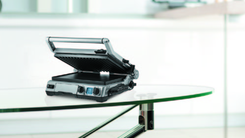Устройство
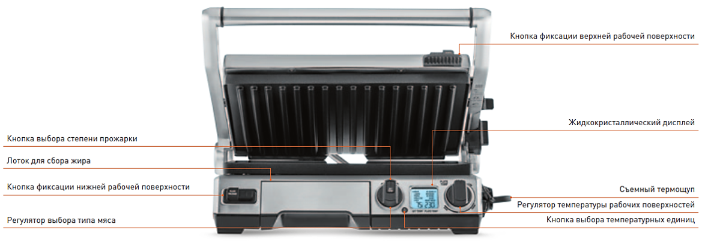 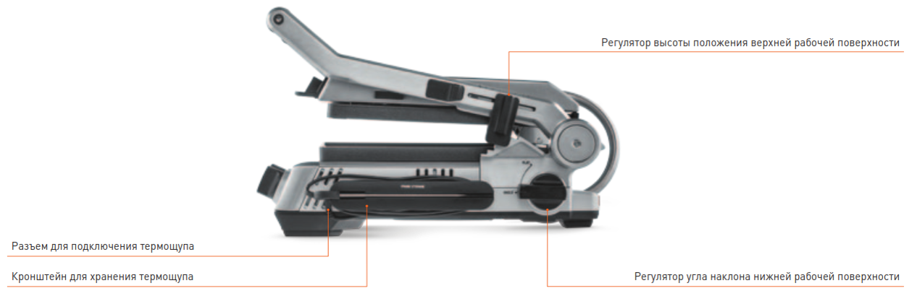Съемный термощуп для ожидаемого результата
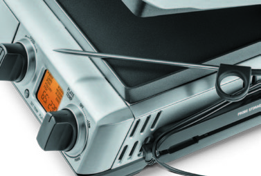При использовании съемного термощупа, гриль автоматически определит готовность стейка в зависимости от типа мяса и выбранной вами степени прожарки. Устройство позволяет не нарушать целостность блюда при проверке его готовности, сохраняет сочность и гарантирует превосходный результат. Как только температурный щуп зафиксирует внутри мяса нужную температуру, гриль подаст звуковой сигнал о готовности блюда.
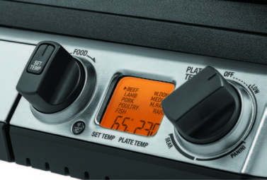Устройство позволяет не нарушать целостность блюда при проверке его готовности, сохраняет сочность и гарантирует превосходный результат. Как только температурный щуп зафиксирует внутри мяса нужную температуру, гриль подаст звуковой сигнал о готовности блюда. В мультишефах BORK такие программы называются «сенсорными». Устройство учитывает особенности рыбы, птицы и мяса и выставляет оптимальную температуру и время приготовления в зависимости от реальной степени прожарки блюда.
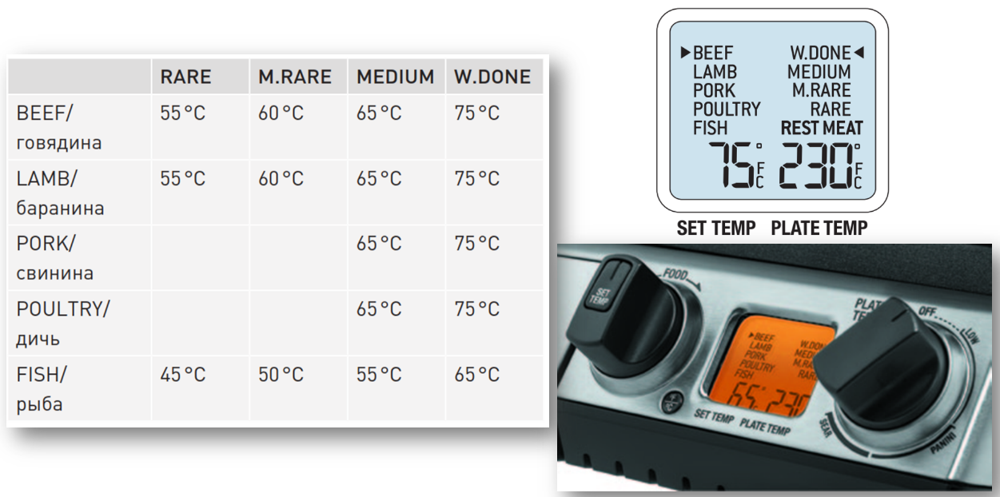При подключении термощупа на дисплее активизируются автоматические программы. С помощью регулятора PLATE TEMP выставите температуру 230 °C и прогрейте гриль. При достижении заданной температуры гриль подаст звуковой сигнал и значение температуры перестанет мигать. Вставляем термощуп в мясо, выбрав толстую часть и направив термощуп к центру куска. С помощью регулятора FOOD установите желаемый тип мяса. С помощью кнопки SET TEMP установите желаемую степень прожарки. Мясо вместе с термощупом положите на рабочую поверхность и закройте верхнюю рабочую поверхность. По окончании приготовления прозвучат 3 звуковых сигнала, и на дисплее отобразится индикация REST MEAT.
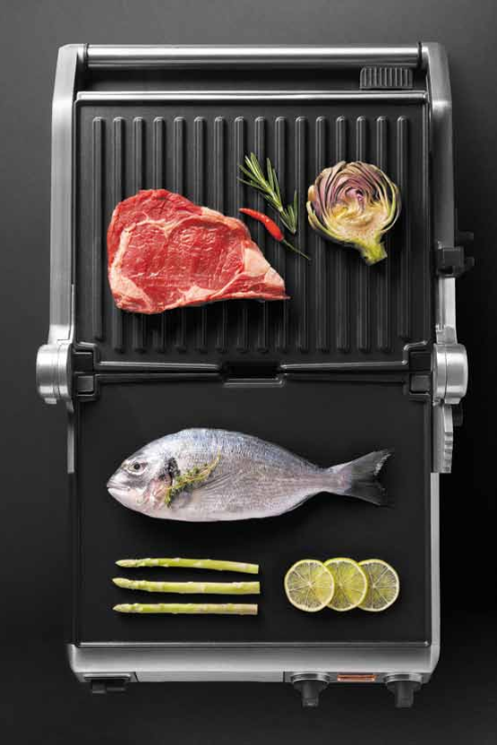При излеченном термощупе доступны ручные настройки.
LOW — 160 – 175 °С — температурный режим для приготовления овощей, фруктов
PANINI — 180 – 205 °С — температурный режим для приготовления панини, сэндвичей
SEAR — 210 – 230 °С — температурный режим для приготовления мяса, рыбы, птицы
Система равномерного нагрева — ELEMENT IQ
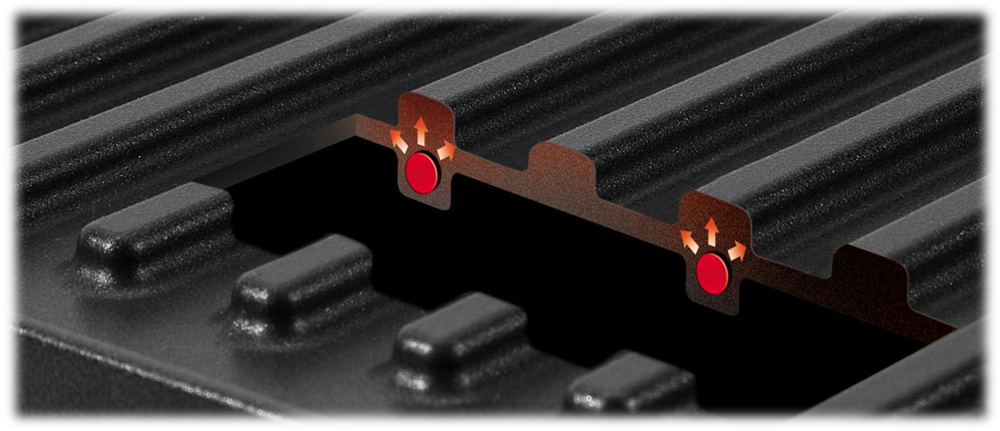Нагревательный элемент интегрирован в рабочую поверхность, что обеспечивает быстрый нагрев и равномерное распределение тепла, как в профессиональных грилях Высокая мощность 2400 Вт обеспечивает стабильную температуру во время всего процесса приготовления. Сенсоры гарантируют постоянное поддержание стабильной температуры. Это обеспечивает качественную работу гриля, подрумянивая продукты и наделяя их хрустящей корочкой для получения сочных и изумительных по красоте результатов приготовления.
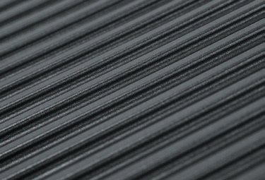Трехслойное антипригарное покрытие Quantanium обладает повышенной прочностью, устойчивостью к царапинам и повреждениям. Позволяет готовить вкусную и здоровую пищу без жира и масла. Обеспечивает легкую эксплуатацию и чистку. Не содержит PFOA (Перфтороктановая кислота)
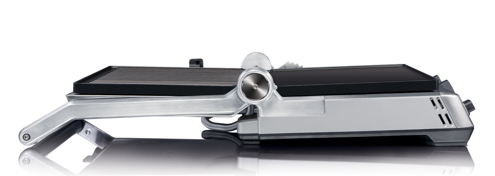Продуманная конструкция гриля предоставляет возможность использования в режиме контактного гриля, пресса для сэндвичей или режима барбекю. Позволяет готовить несколько блюд одновременно.
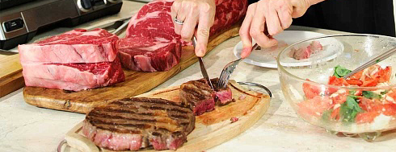Одновременный нагрев с двух сторон значительно сокращает время приготовления, что позволяет сохранять максимум питательных свойств продукта.
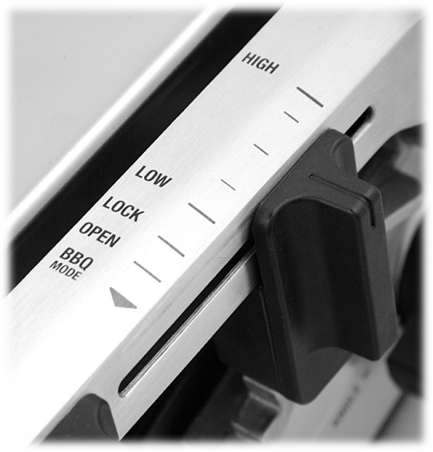Для приготовления в режиме контактного гриля и пресса для сэндвичей можно установить регулятор высоты в одно из шести положений. Эта особенность позволяет выбрать силу давления для сохранения сочности и формы продукта.
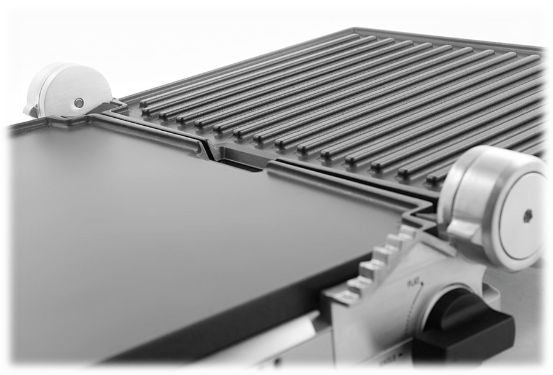Возможность регулировать угол наклона нижней рабочей поверхности позволяет легко удалять излишний жир и использовать гриль для приготовления диетических блюд без жира. Горизонтальное положение рекомендуется для приготовления продуктов в собственном соку, изделий из теста, овощей и блюд из яиц.
Съёмные рабочие поверхности
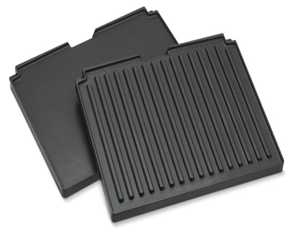
Рифленая рабочая поверхность оптимальна для жарки мяса
Плоская рабочая поверхность — для овощей, фруктов, блюд из яиц и теста
Поверхности легко снимаются и очищаются, их легко поменять местами.
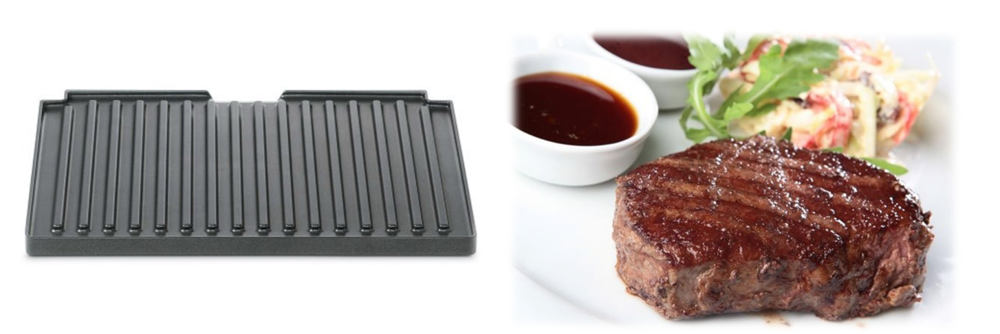Благодаря ребристому рисунку на приготовленном продукте остаются характерные полоски. Но это далеко не главное. Контакт продукта с поверхностью гриля минимален, что позволяет готовить без масла, а мясо не «сгорит». Излишки жира, выделяемые во время готовки мяса, не пропитывают пищу, а стекают по желобкам и собираются в лотке.
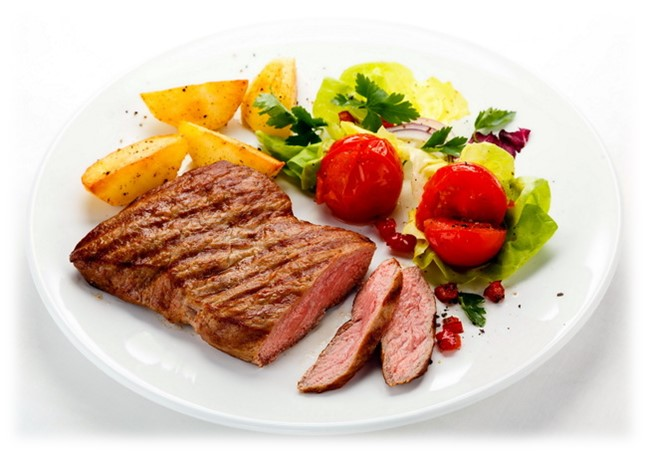Гриль вытапливает лишний жир, снижая калорийность блюд. Приготовление на гриле считается самым полезным способом жарения, так как нет пригоревшего масла — а это источник канцерогенных веществ, образующихся при нагревании насыщенных жиров. Поэтому мясные блюда, приготовленные на гриле, можно есть не опасаясь за свое здоровье! Блюда, приготовленные на гриле, во всем мире считают диетическими!
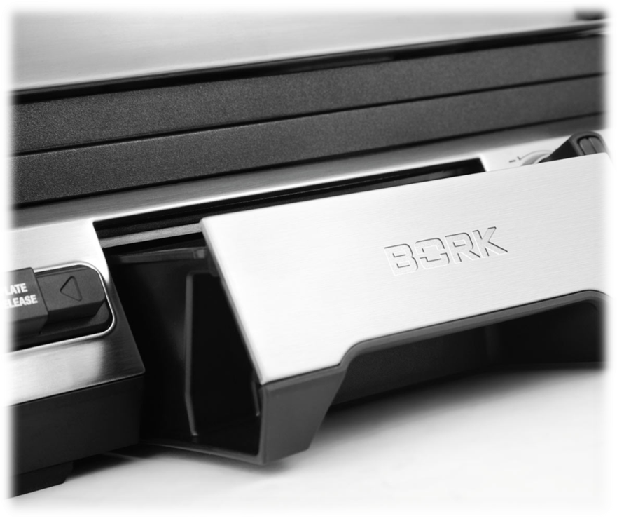Большой съемный лоток в передней части гриля для сбора жира обеспечивает чистоту стола и легкую чистку после приготовления.
Диагностика и устранение неисправностей
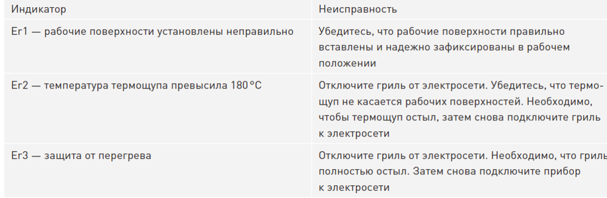Для удобства хранения в корпусе гриля предусмотрены: замок для фиксации поверхностей гриля, отсек для смотки шнура, вертикальное хранение.

Технические характеристики:
Напряжение: 220 – 240 В
Частота: 50 Гц
Мощность: 2000 - 2400 Вт
Габариты (ВхШхГ): 180х425х365 мм
Длина электрического кабеля: 1 м
Вес: 8,7 кг
Страна изготовления: Китай